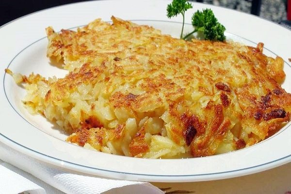

Gastronomia de Suiza
Hay quien dice que la gastronomía suiza no existe debido a que la mayoría de sus platos más conocidos tienen una fuerte influencia de los países vecinos como Francia, Alemania e Italia, sin embargo la riqueza de los productos suizos ha ganado tal popularidad que han conseguido con el paso del tiempo hacer que cada uno de sus platos cuente con una personalidad propia.
El queso y el chocolate se han convertido en los productos más populares de la gastronomía suiza, sin embargo la mezcla de sabores en combinación con todas las variedades existentes de productos suizos, hacen cada plato único y especial.
Nombre |
Descripcion |
Imagen |
|---|---|---|
Raclette |
La raclette es uno de los platos suizos por excelencia, especialmente típico de la región de Valais. Debe su nombre al queso raclette proveniente de la misma región, el cual se presenta en forma de enorme rueda que puede alcanzar como mínimo los 6 kilos de peso. |
|
Chocolate Suizo |
El chocolate suizo se ha convertido además de en uno de los alimentos más ricos y deliciosos que podremos probar en cualquiera de sus ciudades y pueblos, en un auténtico símbolo del país. Y es que muy pocos se resisten ante una humeante taza de chocolate o un trocito de este manjar con denominación de origen suiza. |
|
Älplermagronen |
El plato Älplermagronen, que podríamos traducir como macarrones alpinos con compota de manzana, es uno de los más deliciosos platos de pasta que encontraremos especialmente en la parte de Suiza central. |
|
Fondue de queso |
La fondue es un plato muy conocido en Suiza a pesar de que su popularidad se ha extendido a otros países como Francia. La receta original se elabora con queso gruyere o queso emmental aunque se realizan otro tipo de variantes con todo tipo de quesos como por ejemplo con cheddar |
|
Rösti |
El rosti es un plato muy popular en Suiza cuyos orígenes se remontan a la época en la que los agricultores afincados en los cantones alemanes preparaban esta tortilla como desayuno. |
 |